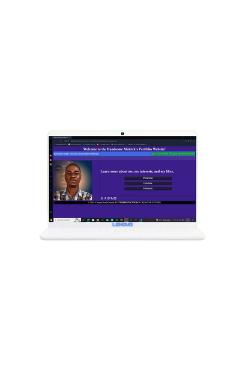

Home, Personal, Professional, Story Board, Personal Development, Contact, Strongest Traits
- All webpages are themed with both the shades of Dark Purple and Royal Blue colors.
- All icons on the webpage are interactive and will direct the user to the Arthur's contact information.
- The Home webpage has an image of the Arthur with buttons that lit green and white when hovered. The buttons will direct the user to parts the Arthur's Personal webpage. The image of the Author will redirect users to their mail with entailing his email address and A subject.
- The Personal button displays text and images about the Arthur's Interests, Hobbies, and Strongest-traits and how they impact his academic life. Also, a favorite scene, personal motto is displayed. Moreover, the Author identifies who his hero is, and explains why he choose his hero. Finally,on the personal webpage an online personality tool test results are displayed and are reflected on.
- The main menu bar, and its buttons are consistent across all webpages of the website, this will enable the user to navigate across the webpages.
- The Professional webpage entails images and text, thus, the text describes the Author's Resume
- On the Contact webpage the Storyboard button to direct the user to the Storyboard of the website can be found. Additionally, the contact webpage is filled with methods the Author can be contacted through and a image with text sharing his business hook..
- On the Personal-Development webpage an image of the book Twelve Pillars by Jim Rohn and Chris Widener can be found along with the website developer's summary of the book. Attached the Web developer reflected how the book may apply to himself, along with his current education status, followed by what skills he have acquired.
- Finally, after all the information on each webpage there is a footer colored with both black and white colors.
|
|